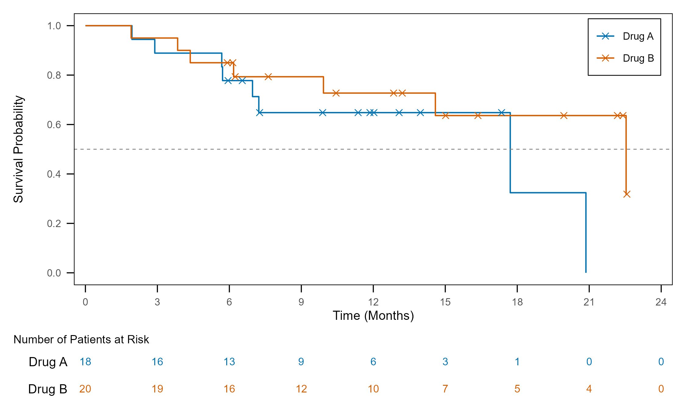
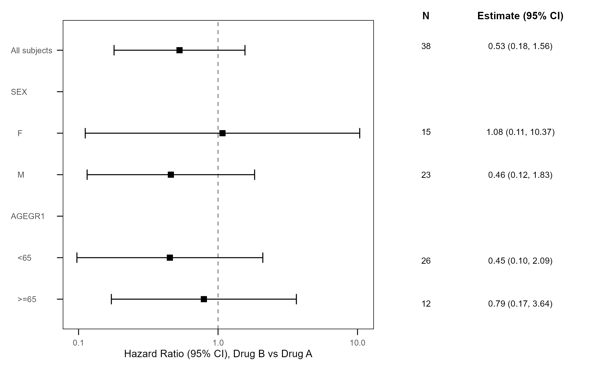
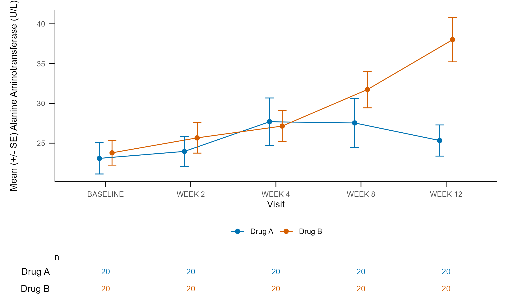

Specifications for clinical tables, listings and figures, as Excel workbooks (and YAML for figures): what is analysed, how it is laid out, how the report is dressed. tflspec turns a spec into the object it stands for and into the R program that makes it; rtfreporter renders the RTF, and tflplanner is the GUI on top.
tflplanner the GUI; installing it installs the other two
|
tflspec specs -> objects and code (needs rtfreporter, cards at run time)
|
rtfreporter the RTF renderer; usable on its ownWorking with an AI assistant? Attach tflspec_ai_manual() (the manual of the version you have installed) to the chat session.
Status: early development (0.0.x). Discussion and sample code: Discussions.
R 4.1 or later; analyses that use cardx (e.g. t-tests, confidence intervals) need R 4.2 or later.
Concept
- A spec becomes readable code. The program tflspec writes from a spec is short and plain, close to what a statistical programmer writes by hand and easy to maintain – a program people can read, copy and finish by hand.
- The typical cases, kept simple. The spec’s columns cover the analyses and table layouts most studies use, so that the code written from them stays simple; they do not try to cover every possible design.
- R code inside the spec. What the columns cannot say is written in the spec as R – a condition, a derived column, an argument, a step after the ARD, or a whole program for a report – and the written program places it where it belongs.
- Shared setup, per-report values. What all reports share (header, footer, page style, and study information such as the company name, analysis type and protocol ID) is written once as setup code; each report’s program carries only its own values.
- Spec -> code, one way. The spec is the source (written by tflplanner or edited directly) and the program is written from it; the program is not edited in place.
The one workflow
ADaM ──(ARD spec)──> ARD ──(table spec)──> plan ──(report spec)──> RTF
tfl_ard_code() tfl_table_code() tfl_report_code()
tfl_build_ard() tfl_table_plan() tfl_report()Each spec can be run or written out as a program from the same list of steps, so the object and the program cannot disagree. The written program is what a study keeps: it needs rtfreporter and cards, not tflspec. What a spec makes is checked against the same thing written by hand: the ARD value by value, a table’s RTF byte by byte.
ARD spec
A workbook of four sheets: study (the subject key, where the ARD goes), datasets (the data and its derived columns), populations (the analysis sets) and analyses, one cards / cardx call a row. A population is what ICH E9 and the CDISC Analysis Results Standard call an analysis set: tfl_ars() writes each one as an ARS AnalysisSet, and an analysis’s population_id as its analysisSetId.
| output_id | analysis_id | method | dataset | population_id | by | variables | args |
|---|---|---|---|---|---|---|---|
| T-14-1-1 | AGE | continuous | SAF | TRT01A | AGE | ||
| T-14-3-1 | TEAE | hierarchical | ADAE | SAF | TRTA | AESOC | AEDECOD | over_variables = TRUE |
| T-14-2-2 | KM | cardx::ard_survival_survfit | ADTTE | SAF | TRTA | y = “survival::Surv(AVAL, 1 - CNSR)”, times = c(30, 90) |
spec <- tfl_read_ard_spec("spec/ard_spec.xlsx")
cat(tfl_ard_code(spec), sep = "\n") # the cards / cardx program
ard <- tfl_build_ard(spec) # or run it: one study ARDmethod is a keyword (tfl_ard_methods()), any pkg::function, or a function of the study’s own (study key source) – for what cards and cardx have no function for. strata and denominator are columns; anything else goes in args, as R.
Table spec
The table’s roles and the rtfreporter plan verbs, one sheet a grain: tables, variables, cells, layout, columns, style, cell_styles, col_header.
spec <- tfl_read_report_spec(c("report.xlsx", "tables.xlsx"), output_id = "DM")
plan <- tfl_table_plan(normalize_ard(tfl_ard_for(ard, "DM")), spec)
tfl_table_code(spec) # or the program: table_plan() |> plan_*()A plan written in code goes back to a workbook with tfl_as_table_spec(), which names what a sheet cannot carry and compares the RTF.
Report spec
The page, the running header and footer, the titles and footnotes, a watermark: sheets report, page, header, footer, titles, footnotes.
doc <- tfl_report(spec, content = plan)
generate_rtfreport(doc, tfl_report_path(spec), overwrite = TRUE)
tfl_report_code(spec, content = "plan") # or the programListing spec
Two sheets keyed by output_id: listings (the dataset, where, sort, rows a page) and listing_cols (one row a printed column).
spec <- tfl_read_listing_spec("spec/listing_figure_spec.xlsx")
tfl_listing_code(spec, "L-16-2-7", datasets = catalog) # the program
pages <- tfl_listing(adae, spec, "L-16-2-7") # or the pagestfl_as_listing_spec() writes a listing coded with rtfreporter back as a spec.
Figure design
A figure is a YAML design – its data steps, statistics and layers – that tfl_fig_design_code() writes as a ggplot2 script depending only on dplyr and ggplot2 (+ ggsurvfit / patchwork). Start from one of 38 templates:
d <- tfl_fig_template("km_risk_table", param = "OS", group = "TRT01P")
tfl_check_fig_design(d, adam)
cat(tfl_fig_design_code(d), sep = "\n")| KM with the number at risk | forest plot | mean by visit |
|---|---|---|
 |
 |
 |
tfl_fig_style() holds every look-and-feel value of a study’s figures. The older sheet-based figure spec and its quick figures (tfl_fig_km(), tfl_fig_waterfall(), … tfl_fig_catalog()) remain while the development team decides between the two.
CDISC ARS
The ARD spec as CDISC’s Analysis Results Standard, and back:
ars <- tfl_ars(ard_spec, table_spec, report_spec)
tfl_write_ars_json(ars, "ars.json"); tfl_check_ars(ars)
tfl_ars_to_specs(tfl_read_ars_json("theirs.json")) # anyone's ARS as specsColumn names
Table, listing and report columns are rtfreporter’s argument names (a layout column is the verb’s prefix and its argument: pages_max_rows is plan_paginate_rows(max_rows = )); ARD columns are cards’ (by, variables, strata, denominator), with two exceptions: statistics (cards’ statistic) and formats (tflspec’s own). A column whose value has a unit says it (_twips, _in, _half_points; rel_width is a relative width). One argument is written in one place: a column, or args, never both. Every column is described on its header cell’s comment and by tfl_spec_columns().
Citation
If tflspec helps your work, please cite it with citation("tflspec"). The statistics of the tables come from cards and cardx; please cite those too (citation("cards"), citation("cardx")).
Acknowledgements
tflspec stands on the work of many others, and we are grateful to their authors.
- cards and cardx: the analysis results data (ARD) that every ARD spec is written for, an outcome of the pharmaverse community’s work on analysis results data.
- ggplot2 and its extensions (ggsurvfit, patchwork and others): the figure code tflspec writes is their code.
-
CDISC: the Analysis Results Standard, whose JSON Schema is included unchanged (
inst/ars/, MIT; seeinst/COPYRIGHTS), and siera, which reads ARS. - pharmaverseadam: the ADaM data (from the CDISC pilot study) of the examples.
tflspec is an independent project and is not affiliated with, or endorsed by, the authors of these packages or CDISC.
License
Apache License 2.0 © 2026 Yoichi Masui. See LICENSE.md. The CDISC ARS JSON Schema in inst/ars/ keeps its own MIT licence (see inst/COPYRIGHTS).